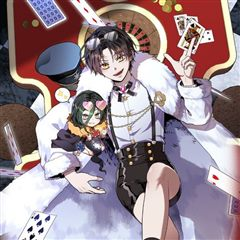
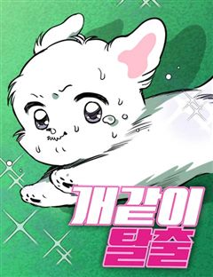
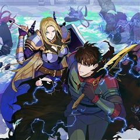
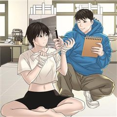
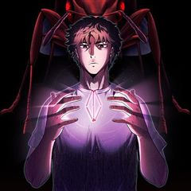

드라마 미스터리·서스펜스 웹툰 추천 TOP 30
드라마 작품 중에서 미스터리, 서스펜스, 두뇌싸움, 로맨스릴러 같은 요소가 들어간 작품만 골랐어요. 네이버웹툰·카카오웹툰·레진코믹스에서 조건에 맞는 작품 54개 중 인기 순으로 30개를 골랐어요. 인기 TOP 3: 백작가의 망나니가 되었다, 1초, 상남자
2026-10-11 기준 · 성인 작품 제외
내 취향으로 더 좁혀서 추천받기 →-
1
 카카오웹툰
카카오웹툰백작가의 망나니가 되었다
눈을 떠보니 소설 속이었다. 그것도 망나니로 유명한 백작가의 도련님 몸으로…. 그리고, 소설 속에서 나를 박살 냈던 막강한 주인공 최한이 곧 여기로 온다.
드라마미스터리빙의카카오웹툰에서 보기 → -
2네이버웹툰
1초
구조율 100%의 전설적인 소방관. 그의 특별한 능력은 긴장하는 순간, 미래가 보인다는 것! 촌각을 다투는 진짜 소방관들의 이야기
드라마서스펜스눈물샘자극현대이능력네이버웹툰에서 보기 → -
3
 네이버웹툰
네이버웹툰상남자
오로지 성공만을 바라보며 기업 정점의 자리까지 오른, 최고의 샐러리맨 한유현. 대가로 사랑하던 모든 이를 잃어버린 후, 후회 섞인 인생을 돌아보는데... 어느 날 모든 기억을 안은 채, 젊은 시절의 그때로 돌아가게 된다. 모든 것의 시작점인 신입사원의 위치에서, 그가 다시 삶을 설계한…
드라마두뇌싸움사이다오피스청춘네이버웹툰에서 보기 → -
4
 네이버웹툰
네이버웹툰재벌집 막내아들
[화제의 드라마 원작 웹툰!] 13년 동안의 수고를 배신으로 돌려받다니! 머슴처럼 살다 버려진 순양그룹의 실장, 윤현우. 모든 게 끝났다 싶었을 즘, 순양그룹 진 회장의 손주 진도준으로 깨어난다! 하지만 상속권과는 거리가 먼 재벌집 막내아들 진도준. 과연 그는 가족 정치극에서 최후의…
드라마두뇌싸움고자극드라마오피스정치네이버웹툰에서 보기 → -
5
 카카오웹툰
카카오웹툰신인인데 천만배우
계부 밑에서 어렵게 유년시절을 보낸 무영. 그에겐 삶이 지옥과도 같았다. 살아 있는 지옥에서 살 길을 알려준, 신비스러운 한 목소리. “네 인생 대신 다른 누군가의 인생을 살아." 그렇게 시작한 연기였는데…… 생존 본능과도 같은 것이었을까. 잘해도, 너무 잘한다. 연기를 통해 새 삶은…
드라마미스터리성장물카카오웹툰에서 보기 → -
6

카카오웹툰후작가의 역대급 막내아들
명망있는 후작가의 막내아들 잭 발란티에. 남들 보다 못한 가족들 사이에서 유일하게 의지했던 건 누나 뿐! 가문 따위야 멸문을 하든 말든 미련이 없었지만, 누나의 죽음이 헛된 희생인 걸 알게 된 후, 오로지 복수만을 위한 검귀가 되었다. 마침내 서대륙을 지배하는 돌칸 제국을 무너뜨리고,…
드라마서스펜스복수극카카오웹툰에서 보기 → -
7
 카카오웹툰
카카오웹툰록산
격동의 19세기 말, 귀족 셸 가문 남작 부부가 살해되고, 부모의 죽음으로 큰 충격과 실의에 빠진 아들 '막시밀리안'. 장례식을 치르고 돌아온 날 어머니가 고용한 신비롭지만 수상한 가정교사 '록산'을 만나는데... 마법을 사용하여 자신을 위험에서 구한 그녀에게 점차 묘한 끌림을 느끼는…
드라마미스터리시대물카카오웹툰에서 보기 → -
8카카오웹툰
늪에 잠든 것
6년 만에 돌아간 초령, 죽은 줄만 알았던 소꿉친구 귀명이 살아있었다. 그것도 무당이 되어. 어릴 적과는 달리 너무나 차갑게 변해버린 귀명, 그동안 무슨 일이 있었던 것일까. 왜 이 마을에서는 죽은 사람의 영혼이 산 사람 몸에 빙의되는 일이 계속 일어나는 것일까. 죽은 이의 이야기,…
드라마미스터리설렘폭발청춘카카오웹툰에서 보기 → -
9
 카카오웹툰
카카오웹툰메모라이즈(MEMORIZE)
[한국 최초의 이세계물 웹소설 메모라이즈. 이제, 그 전설이 웹툰으로 돌아왔다!] 현대와는 다른 세상 홀 플레인. 김수현은 군 전역 후 어느날 갑자기 홀 플레인의 세상에 강제로 소환당한다. 많은 우여곡절을 거치고 끝끝내 정상에 오르는데 성공하지만, 홀 플레인에서 활동한 10년의 세월은…
드라마서스펜스회귀카카오웹툰에서 보기 → -
10

네이버웹툰개같이 탈출
"살아남으라고? 나는 자그만 말티즈란 말이야!" 세상 따뜻하고 포근한 가정집에서 살아온 삐용이. 언니 품에서 그저 귀엽기만 하면 되는 견생이었는데... 갑자기 가족들과 모든 인간이 사라져버렸다. 혼자서는 아무것도 할 줄 모르는데, 괴물 좀비 개들이 우글거리는 고립된 도시를 탈출해 언니…
드라마서스펜스디스토피아생존스릴러네이버웹툰에서 보기 → -
11
 카카오웹툰
카카오웹툰닥터 플레이어
왕의 사생아, 레이몬드. 사람들의 멸시로부터 도망쳐 치료사가 되지만, 결과는 F급 낙제 치료사라는 낙인뿐. 그러던 어느 날, 그에게 기적이 찾아온다. [플레이어로 각성하였습니다!] [직업 : 외과의사(SSS급)] 이 세계에 존재하지 않는 의학 지식을 얻게 된 레이몬드. 최초의 외과의사…
드라마미스터리힐링직업드라마카카오웹툰에서 보기 → -
12
 카카오웹툰
카카오웹툰칠흑이 삼킨 여름
할머니가 돌아가신 후, 도시에서의 생활을 정리하고 고향에 돌아온 ‘나수현’. 수현은 뭔가에 이끌리듯, 할머니가 살아생전 절대 오르지 마라 했던 ‘오봉산’에 오른다. 산속에서 길을 잃고 기이한 일에 휘말려 위험에 처한 찰나, 수현은 목이 잘려도 멀쩡한 ‘서문주’라는 남자의 도움을 받는데…
드라마서스펜스설렘폭발환생카카오웹툰에서 보기 → -
13

카카오웹툰1레벨 플레이어
'각성하셨습니다.' 드디어 그렇게 바라던 기적이 일어났다. 이제 모든 일이 잘 풀릴 것만 같았다. '아니, 근데 왜 레벨이 안 올라?' 형편없는 스텟 수치에 노 스킬이라니! 저주캐에 절망하던 중 눈에 들어온 이상한 고유 스킬. -판매와 구매. 포인트를 버는 것만이 유일하게 살아남을 희…
드라마서스펜스게임판타지카카오웹툰에서 보기 → -
14
 카카오웹툰
카카오웹툰뱀파이어의 아들들
인간들과 함께 살아가는 뱀파이어 가족. 흡혈 욕망에서 자유로워지는 방법은 바로 진정한 사랑♡♡♡ 아들1. 차지성 우등생-명문대-대기업 코스를 걸어온 엄친아. 오래 사귄 여친과 사내 비밀연애 중. 아들2. 차유성 잘나가는 쇼핑몰 사장 겸 모델. 3개월마다 여친이 바뀌는 바람둥이. 아들3…
드라마미스터리로맨틱코미디카카오웹툰에서 보기 → -
15
 네이버웹툰
네이버웹툰두근두근 귀연시
반지하 월세방에서 게임 스트리머로서 생활을 이어가던 최도연. 자신에게 많은 도움을 준 고향 선배이자 방송 선배인 삭제형에게 한 게임 링크를 받게 되는데. 별생각 없이 [두근두근 귀연시] 를 다운로드한 도연의 앞에 보여선 안될 그녀들이 보이기 시작한다. 당황도 잠시 목숨을 건 처녀귀신…
드라마로맨스릴러하렘오컬트판타지게임네이버웹툰에서 보기 → -
16
 카카오웹툰
카카오웹툰상태창에서 시한부가 빗발친다
3,000편이 넘는 희대의 명작 <여명의 참회>에 빙의했다. 그것도 단두대형에 처해진 공작가의 후계자이자 나의 차애 캐릭터인 ‘미첼 네프티스’로. 하지만 상태창을 열어보니 사망까지 D-3. 이대로는 죽을 수 없다는 생각에 어떻게든 살아남아보니 전개를 바꿀 때마다 경험치가 지급된다?!…
드라마미스터리빙의카카오웹툰에서 보기 → -
17
 카카오웹툰
카카오웹툰변경백 서자는 황제였다
바리엘 제국의 마법사이자 어린 나이에 황제가 된 이안은 조카의 반란으로 감옥에 갇힌다. 이안을 구해주러 온 마법사 나움은 금지된 시공간 마법을 사용한다. 금지된 마법은 황제 이안을 과거 100년으로 이끌고 100년 전 멸문한 변경백 가문의 서자 이안에게 빙의한다. 서자 이안은 접경지인…
드라마서스펜스사이다환생카카오웹툰에서 보기 → -
18
 카카오웹툰
카카오웹툰마법명가 막내아들
내가 쓴 허술한 개연성과 마구잡이 설정의 소설 속에 들어와 버렸다. 하필이면 17살에 가문 내에서 숙청당하는 비운의 망나니 조연, '라센 메이튼'이 되어서. 티타늄 수저에 빙의. 그리고, 적당히 중간을 유지하면서 조용하게 지낸다면, 유유자적 돈낭비 라이프도 꿈이 아니다! 작가로서. 그…
드라마미스터리빙의카카오웹툰에서 보기 → -
19
 카카오웹툰
카카오웹툰운빨
내 삶에서 그렇게 터지지 않던 운빨이 게임을 접기 직전, 단 한 방에 터졌다! 세계 최초 가상현실 게임 <서킷>에서 인생 역전하려던 이기호, 4억 명의 플레이어 중 그 누구도 손에 넣지 못한 레어 아이템이 그의 손에 들어왔다! “이런 게 진짜 인생역전 아니냐!”
드라마미스터리사이다게임판타지카카오웹툰에서 보기 → -
20

카카오웹툰미대괴담
군대 전역 후 미대 복학을 한 범환, 후배 과대 태연에게 자신의 군대 가기 전 학교에서 있었던 숨기고 싶은 비밀을 들킨다. 태연은 교내에 도는 괴담들에 현상금이 걸린 걸 보곤 체대에 다니는 친구 마리와 자신에게 치부가 들킨 범환을 회유해 괴담을 해결해 간다. 바바리맨, 동물 학대, 몰…
드라마서스펜스캠퍼스카카오웹툰에서 보기 → -
21
 네이버웹툰
네이버웹툰재벌의 품격
1990년대 대한민국을 대표했던 재경 그룹 회장 손중길. 눈을 감고 30년 뒤, 2022년 손자 손정훈의 몸으로 눈을 뜬다. 30년 전과 비교해 눈에 띄게 쇠퇴한 재경 그룹. 손중길은 자신이 일궈 낸 그룹을 다시금 정상에 올리려 한다.
드라마두뇌싸움사이다현대오피스네이버웹툰에서 보기 → -
22
 네이버웹툰
네이버웹툰보이스피싱인데 인생역전
"당신에게 미래를 팝니다!" 5년 전 조직적인 음해로 한 순간에 몰락한 국민배우 강주혁. 고통스럽게 지내던 그에게 어느날 의문의 전화 한 통이 걸려온다. 바로 미래를 예언해 주는 보이스피싱! 연예계 재기와 복수를 위한 위험한 거래가 시작된다.
드라마두뇌싸움인생역전참교육하이퍼리얼리즘네이버웹툰에서 보기 → -
23
 카카오웹툰
카카오웹툰환생자의 스트리밍
“십 년간 오늘만을 준비했어. 그러니까 네가 이해해라.” 최강의 플레이어라 불리던 이수혁. 그러나 믿었던 친구의 배신으로 길드원들을 지키다 처참한 죽음을 맞는다. ···눈을 뜬 순간, 그는 무려 20년 후의 세상에 돌아와 있었다. 세상은 그의 죽음을 ‘사고’로 기억하고, 배신자는 이수…
드라마미스터리서스펜스환생카카오웹툰에서 보기 → -
24

카카오웹툰개미
조나탕 웰즈는 삼촌의 유언으로 집을 상속받아 가족과 살게 된다. 삼촌을 알고 싶었던 조나탕은 할머니에게 삼촌인 에드몽 웰즈의 지하실로 내려가지 말라는 당부가 적힌 쪽지를 받게 되고, 조나탕은 우연한 한 번의 계기로 지하실을 들어가게 되며 이후 홀린 듯이 지하실에 찾아간다. 동시에 개미…
드라마서스펜스카카오웹툰에서 보기 → -
25
 네이버웹툰
네이버웹툰빌런의 프로파일러
살인자로부터 엄마를 잃고, 사고를 당한 아이 이신혁. 여러 지식과 학습할 수 있는 신비한 공간에서 15년간 지식을 쌓은 뒤, 한 달 만에 코마 상태에서 깨어나게 된다. 15년간 쌓은 지식과 능력으로 사람을 위협하는 존재들과 죽은 자의 억울함을 풀어주는 천재 프로파일러가 되어가는, 프로…
드라마두뇌싸움고자극스릴러시리어스범죄네이버웹툰에서 보기 → -
26카카오웹툰
의원님이 보우하사
나, 6선 국회의원 구영진. 대한민국의 정점, 정치계의 희망! 2008년 어느 날, 측근들의 배신으로 특검 조사를 받다 스스로 생을 마감한다. 그리고 눈을 뜬 이곳은.... 10년 전 서울?! 귀신이 된 날 보는 사람도, 목소리를 듣는 이도 없다. 딱 한 사람, 25살 9급 공무원 차…
드라마서스펜스정치카카오웹툰에서 보기 → -
27
 카카오웹툰
카카오웹툰나 혼자 부활한다
『고유능력: 부활』 “뭐지? 이 개사기 개꿀 먼치킨 스킬은?” 하지만 강현은 몰랐다. 죽어도, 죽고 싶어도, 죽지 않는다는 게 어떤 의미인지를… 불사의 몸으로 지구에서 가장 악명 높은 헌터가 된 남자! 인류의 존망, 아니 존망한 인류를 위해, 오늘도 나 혼자 부활한다!
드라마미스터리개그게임판타지카카오웹툰에서 보기 → -
28카카오웹툰
임기 첫날에 게이트가 열렸다
좌충우돌 우당탕탕 아포칼립스 헌터레이드 정치활극 모시던 국회의원의 명령으로 얼떨결에 국회의원 선거에 출마한 청년 한승문. 당연히 아무 기대도 안 하고 나간 선거였지만 갑자기 유일한 상대 후보가 정치자금법 위반으로 잡혀가며 천운으로 국회의원에 당선되어버린다. 벅찬 마음으로 국회의원 선서…
드라마서스펜스아포칼립스카카오웹툰에서 보기 → -
29카카오웹툰
루드비코가 단편을 숨김
<나는 개로소이다> 어느 날, ‘말’을 하게 된 반려견 채드와 실패한 웹툰 작가 최충의 좌충우돌 모험기. 웹툰 작가 최충의 반려견은 왜 갑자기 ‘말’이 터진 걸까?! <삐라> 1950년, 동경 유학을 다녀온 후 일일 만화를 연재하던 박종수는 같은 일간지의 여류 만화가 김예원을 흠모하게…
드라마미스터리카카오웹툰에서 보기 → -
30카카오웹툰
무패의 랭커
32년 전 심판의 날. 갑작스럽게 나타난 몬스터들에 의해 인류는 멸종 직전까지 몰리게 된다. 하지만 독특한 능력을 사용하는 이능력자들이 각성하며 싸움은 새로운 국면을 맞이하고 치열한 전투 끝에 잃어버린 땅을 되찾는다. 살아남은 몬스터들은 전세계 곳곳에 던전을 형성하며 인간을 위협하고,…
드라마서스펜스헌터물카카오웹툰에서 보기 →